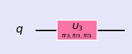
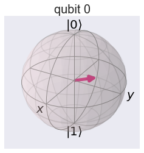
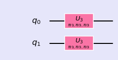
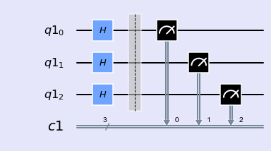
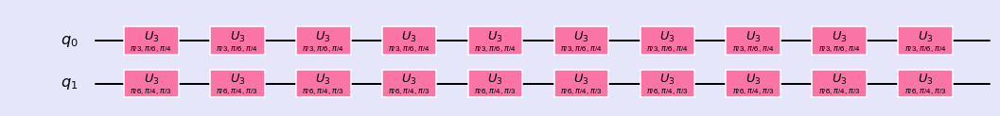
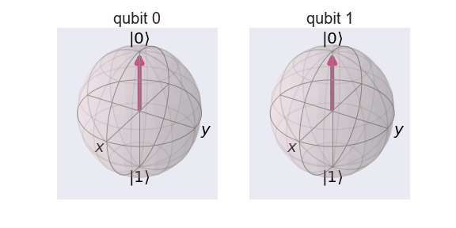
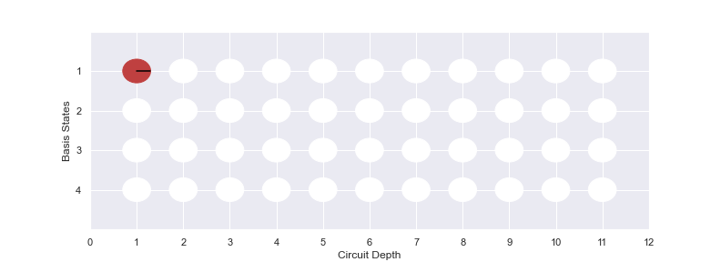

Rotation Gate
U-gates
- The U3-gate is the most general of all single-qubit quantum gates. It is a parametrised gate of the form:
$$ U_3(\theta, \phi, \lambda) = \left( \begin{array}{cc} \cos(\theta/2) & -e^{i\lambda}\sin(\theta/2) \\ e^{i\phi}\sin(\theta/2) & e^{i\lambda+i\phi}\cos(\theta/2) \end{array}\right) $$
- Qiskit provides U2 and U1-gates, which are specific cases of the U3 gate in which \( \theta = \tfrac{\pi}{2} \), and \( \theta = \phi = 0 \) respectively. You will notice that the U1-gate is equivalent to the Rϕ-gate.
$$U_3(\tfrac{\pi}{2}, \phi, \lambda) = U_2 = \frac{1}{\sqrt{2}} \left( \begin{array}{cc} 1 & -e^{i\lambda} \\ e^{i\phi} & e^{i\lambda+i\phi} \end{array}\right);$$
$$ U_3(0, 0, \lambda) = U_1 = \left( \begin{array}{cc} 1 & 0 \\ 0 & e^{i \lambda} \end{array} \right) $$
- \(R_x,R_y, R_z\) gates are special case of $U_3$ gate.
%matplotlib inline
import numpy as np
import IPython
import matplotlib.pyplot as plt
from qiskit import QuantumCircuit
from qiskit import BasicAer
from qiskit.tools.jupyter import *
from qiskit.visualization import *
import seaborn as sns
sns.set()
from helper import *
import os
import glob
import moviepy.editor as mpy
U Gate (1 qubit)
Lets apply \( \theta = \pi/3, \phi = pi/3 , \lambda = pi/3 \) to a single qubit through \(U_3\) gate. We can se the rotation in bloch sphere.
qc = QuantumCircuit(1)
qc.u3(np.pi/3,np.pi/3,np.pi/3,0)
style = {'backgroundcolor': 'lavender'}
qc.draw(output='mpl', style = style)

- Single qubit state vector
backend = BasicAer.get_backend('statevector_simulator')
job = execute(qc,backend).result()
vec1 = job.get_statevector(qc)
vec1
array([0.8660254+0.j , 0.25 +0.4330127j])
getBlochSphere(qc)

- Matrix
backend = BasicAer.get_backend('unitary_simulator')
job = execute(qc, backend)
ndArray = job.result().get_unitary(qc, decimals=3)
UM1 = np.matrix(ndArray)
UM1
matrix([[ 0.866+0.j , -0.25 -0.433j],
[ 0.25 +0.433j, -0.433+0.75j ]])
U Gate (2 qubits)
- Define circuit
qc = QuantumCircuit(2)
qc.u3(np.pi/3,np.pi/3,np.pi/3,0)
qc.u3(np.pi/3,np.pi/3,np.pi/3,1)
style = {'backgroundcolor': 'lavender'}
qc.draw(output='mpl', style = style)

- State vector
Lets perform some manual approach for final state in ket notation.
backend = BasicAer.get_backend('statevector_simulator')
job = execute(qc,backend).result()
vec2 = job.get_statevector(qc)
vec2
array([ 0.75 +0.j , 0.21650635+0.375j ,
0.21650635+0.375j , -0.125 +0.21650635j])
getBlochSphere(qc)

- Two qubits state vector as tensor product
Since this circuit consists of pure superposition brought up by $U_3$ gate, it is possible to obtain final state vector by taking direct product of single qubit states. Results from operation of $U_3$ gate on single qubit can be multiplied with direct product operation to get final state.
$$ (a|0 \rangle + b| 1\rangle) \otimes (c|0 \rangle + d| 1\rangle) = (ac|00 \rangle + ad|01 \rangle + bc|10 \rangle + bd|11 \rangle $$
i.e.,
$$\left(\begin{array}{c} a \\ b \end{array} \right) \otimes \left( \begin{array}{c} c \\ d \end{array} \right) = \left( \begin{array}{c} ac \\ ad \\ bc \\ bd \end{array} \right)$$
Where \( |00 \rangle , |01 \rangle , |10 \rangle \) and \( |11 \rangle \) are basis states for two qubit system.
vec2 = np.kron(vec1,vec1)
vec2
array([ 0.75 +0.j , 0.21650635+0.375j ,
0.21650635+0.375j , -0.125 +0.21650635j])
- Matrix Representation
Based on above circuit, lets construct the matrix representation of the circuit using fundamental gates matrices involved in the circuit.
$$ U_3(\theta_1, \phi_1, \lambda_1) = \left( \begin{array}{cc} \cos(\theta/2) & -e^{i\lambda}\sin(\theta/2) \\ e^{i\phi}\sin(\theta/2) & e^{i\lambda+i\phi}\cos(\theta/2) \end{array} \right)$$
Final Matrix to represent the quantum circuit
$$ U = U_3 \otimes U_3$$
backend = BasicAer.get_backend('unitary_simulator')
job = execute(qc, backend)
ndArray = job.result().get_unitary(qc, decimals=3)
UM2 = np.matrix(ndArray)
UM2
matrix([[ 0.75 +0.j , -0.217-0.375j, -0.217-0.375j, -0.125+0.217j],
[ 0.217+0.375j, -0.375+0.65j , 0.125-0.217j, 0.433-0.j ],
[ 0.217+0.375j, 0.125-0.217j, -0.375+0.65j , 0.433-0.j ],
[-0.125+0.217j, -0.433+0.j , -0.433+0.j , -0.375-0.65j ]])
UM2_from_UM1 = np.kron(UM1,UM1)
UM2_from_UM1
matrix([[ 0.749956+0.00000e+00j, -0.2165 -3.74978e-01j,
-0.2165 -3.74978e-01j, -0.124989+2.16500e-01j],
[ 0.2165 +3.74978e-01j, -0.374978+6.49500e-01j,
0.124989-2.16500e-01j, 0.433 -1.10000e-05j],
[ 0.2165 +3.74978e-01j, 0.124989-2.16500e-01j,
-0.374978+6.49500e-01j, 0.433 -1.10000e-05j],
[-0.124989+2.16500e-01j, -0.433 +1.10000e-05j,
-0.433 +1.10000e-05j, -0.375011-6.49500e-01j]])
- Exercise: \( U_3 \) Gate (3 qubits)
Consider a 3 qubits quantum circuit with H gate applied to each qubit.
n = 3
q = QuantumRegister(n)
c = ClassicalRegister(n)
qc = QuantumCircuit(q,c)
for k in range(3):
qc.h(q[k])
qc.barrier()
qc.measure(q,c)
style = {'backgroundcolor': 'lavender'}
qc.draw(output='mpl', style = style)

$$\textbf{Exercise:}$$ Using above quantum circuit, find final state vector in ket notation, bloch sphere plot for each qubits.
$$\textbf{Exercise:}$$ Using above circuit, find final state vector by implementing tensor product of three single qubit states.
\( \textbf{Hint} \): \(| \psi \rangle = (a|0 \rangle + b| 1\rangle) \otimes (c|0 \rangle + d| 1\rangle) \otimes (e|0 \rangle + f| 1\rangle) \)
$$\textbf{Exercise:}$$ Using above circuit, find matrix representation of the quantum circuit by implementing tensor product of fundamental gate matrices.
\( \textbf{Hint} : U = U_3 \otimes U_3 \otimes U_3 \)
A fun Experiment
qc = QuantumCircuit(2)
for i in range(10):
qc.u3(np.pi/3,np.pi/6,np.pi/4,0)
qc.u3(np.pi/6,np.pi/4,np.pi/3,1)
style = {'backgroundcolor': 'lavender'}
qc.draw(output='mpl', style = style)

- Get Bloch

- Get Phase
